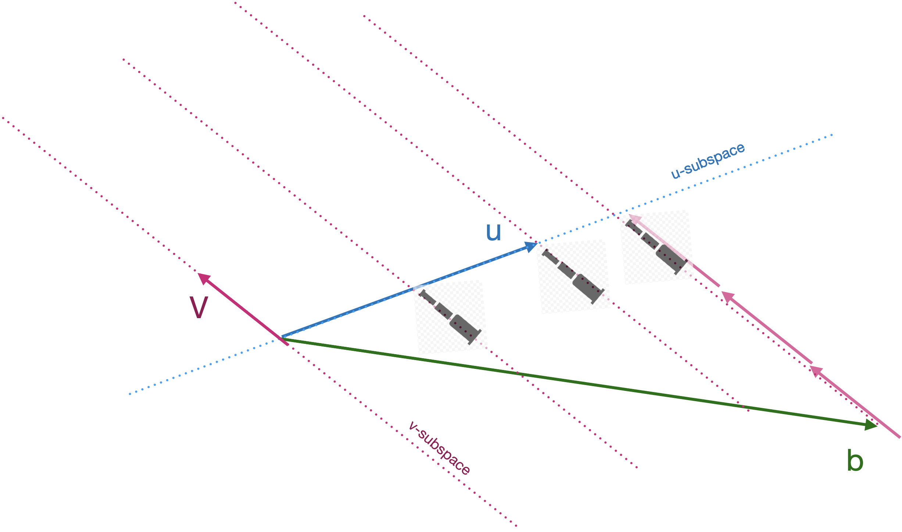
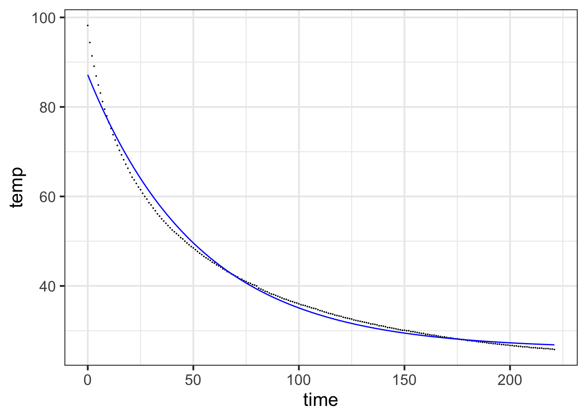

31 The target problem
“In theory there is no difference between theory and practice, while in practice there is.”
In this chapter, we ask you to reconsider a mathematical theory that is universally taught in high-school and to consider augmenting it with newer computational ideas that address the same kind of problems, but which produce useful results even when the mathematical theory insists the “a solution does not exist.”
The time-honored theory is that taught in high-school algebra. There is nothing wrong with that theory except that it is incomplete. It does not address the needs of present-day practice, particularly in data science, statistics, and machine learning.
Algebra, in its basic sense, is about generalizing arithmetic to handle situations where some quantities are not yet known numerically and so are represented by symbols. The algebra student learns rules for symbolic expressions that allow the expressions to be re-arranged into other forms that would plainly be valid if replaced by numbers. Some examples of these rules:
i. \(ax = b\) is equivalent to \(x = a/b\).
ii. \(a + x = b\) is equivalent to \(x=b-a\).
iii. \(a x^2 + b x + c = 0\) is equivalent to \(x = \frac{-b\pm \sqrt{\strut b^2 - 4ac}}{2a}\).
iv. \(\ln(ax) = b\) is equivalent to \(x = \frac{1}{a}\ln(b)\).
A major challenge to the algebra student is to use such rules to re-arrange expressions into a form \(x=\) that enables \(x\) to be calculated from the numerical values of the other symbols. Unfortunately, students are given little or no insight to the historical origins of algebra techniques and why they are not necessarily appropriate for all tasks.
In English, the word “algebra” is seen as early as 1551. It comes from a book written by the Persian Muhammad ibn Musa al-Khwarizmi (780-850), The Compendious Book on Calculation by Completion and Balancing. The book introduced the use of rules familiar to every algebra student. In the original Arabic, the title includes the word “al-jabr,” meaning “completion” or “rejoining.” According to some sources, the literal meaning of “al-jabr” was resetting and rejoining broken bones. That literal meaning correctly conveys the importance of the subject, but also the pain endured by many algebra students. (Incidentally, the “algorithm” comes from the name of the book’s author: al Khwarizmi. He is a major figure in the history of mathematics.)
This history may not be of immediate interest to every reader, but there is a good point to it. The roots of algebra are ancient and developed in an era very different from our own. Today’s student learns algebra to facilitate the study and practice of physics, chemistry, statistics, engineering, and other fields. None of these fields existed when algebra was being conceived. That is, the theory was developed before the recognition of the problems and calculations that arise in modern practice. Thus, “in practice, theory and practice are different.”
This chapter is about re-expressing some basic algebraic theory to align it better to today’s practice.
31.1 Linear equations
The focus of interest will be the familiar task
\[\ \ \ \ \ \ \text{given}\ \ a x = b\,,\ \ \text{find}\ \ x\ .\] All algebra students learn that \(x = b/a\), with the proviso that if \(a = 0\), “there is no solution.”
A somewhat more advanced algebra task is to work with “simultaneous linear equations,” for example: \[\ \ \ \text{given}\ \ \ \begin{array}{rrrcr} 3 x & + & 2 y & = & 7\\ -1&+&y&=&4\end{array} \ \ \ \ \text{find}\ \ x\,\&\,y\ . \]
Solving simultaneous linear equations is hard. It involves more arithmetic than \(ax = b\) and requires the student to make good choices how to take linear combinations of the two equations to reduce the problem to two equations, one with \(x\) as the only unknown and one with \(y\). Also, the “there is no solution” proviso is not easy to state, so you cannot know at a glance whether there is indeed a solution.
The simultaneous linear equation problem can be more compactly written using matrix and vector notation. \[\begin{array}{rrrcr}3x & + &2y & = & 7\\-1&+&y&=&4\end{array} \ \ \text{is the same as}\ \ \left[\begin{array}{r}3\\-1\end{array}\right] x + \left[\begin{array}{r}2\\1\end{array}\right] y = \left[\begin{array}{r}7\\4\end{array}\right] \] You can see the vector form as a linear combination of two vectors. Collecting these two vectors into a matrix \(\mathit{A}\), and similarly writing \(x\, \text{and}\, y\) as the scalar components of a vector \(\vec{x}\) gives \[\left[\begin{array}{rr}3&2\\-1&1\end{array}\right]\ \vec{x} = \left[\begin{array}{r}7\\4\end{array}\right]\] Which can be expressed as \(\mathit{A} \vec{x} = \vec{b}\).
A student, recognizing the similarity of \(\mathit{A}\vec{x} = \vec{b}\) to \(a x = b\) would reasonably suggest the solution \(\vec{x} = \vec{b}/ \mathit{A}\). Such a student might be instructed, “No, you cannot do this.” A better response would be, “Good. Now tell me what you mean by \(\vec{b}/\mathit{A}\)?”
Modern practice often calls for solving \(\mathit{A}\vec{x} = \vec{b}\) in settings where a traditional algebra teacher might say, as for \(0 x = b\) that “there is no solution.”
To illustrate such a setting, recall the problems from Section Section 11.3 of finding the linear combination of the functions \(f(\mathtt{time})=1\) and \(g(\mathtt{time}) = e^{-0.019 \mathtt{time}}\) that best matches the CoolingWater data:
| time | temp |
|---|---|
| 0 | 98.2 |
| 1 | 94.4 |
| 2 | 91.4 |
| ... and so on ... | |
| 220 | 25.9 |
| 221 | 25.8 |
We seek scalars \(C\) and \(D\) such that the function \(C f(\mathtt{time}) + D g(\mathtt{time})\) gives the best possible match to temp.
We can compactly write the problem of finding the best linear combination into matrix form by evaluating \(f()\) and \(g()\) at the values listed in the time column: \[\underbrace{\left[\begin{array}{rr}1&1.0000\\1&0.9812\\1&0.9627\\\vdots\\1&0.0153\\1&0.0150\end{array}\right]}_{\!\!\!\!\!\!\!\!{\large\mathit{A}} = \left[\strut f(\mathtt{time})\,,\ \ \ g(\mathtt{time})\right]} \underbrace{\left[\begin{array}{r}C\\D\end{array}\right]}_{\large\vec{x}} \ \text{is the best match to}\ \underbrace{\left[\begin{array}{r}\mathtt{98.2}\\\mathtt{94.4}\\\mathtt{91.4}\\\vdots\\\mathtt{25.9}\\\mathtt{25.8}\end{array}\right]}_{\large\vec{b}}\]
Regrettably, the classical algebraicists did not propose a rule for “is the best match to.” Replacing “is the best match to” with \(=\) is not literally correct since “there is no solution” that makes the equality literally true.
We will use the term target problem to name the task of finding \(\vec{x}\) such that \(\mathit{A} \vec{x}\) is the best possible match to \(\vec{b}\). This term is motivated by the idea that \(\vec{b}\) is a target, and we seek to use the resources in \(\mathit{A}\) to get as close as possible to the target: choose \(\vec{x}\) such that \(\mathit{A} \vec{x}\) falls as closely as possible to the target.
To address the practical problem in the notation of algebra theory, people write \[\mathit{A} \vec{x} = \vec{b} - \vec{r}\] where \(\vec{r}\) is a vector specially selected to path up \(\mathit{A} \vec{x} = \vec{b}\) so that when the best-matching \(C\) and \(D\) are found, there will be a literal equality solution to \(\mathit{A} \vec{x} = \vec{b} - \vec{r}\).
At first glance, \(\mathit{A} \vec{x} = \vec{b} - \vec{r}\) might seem intractable: How are we to find \(\vec{r}\). The answer is that \(\vec{r}\) will be the solution to the projection problem \(\vec{b}\sim\mathit{A}\). When \(\vec{r}\) is selected this way, \(\vec{r}\) will be the shortest possible vector that can do the matching up. In other words, by choosing \(\vec{r} = \vec{b} \sim \mathit{A}\) we are implementing the following definition of “is the best match to”: “the best match is the one with the smallest length \(\vec{r}\).”
It is remarkable that one can find \(\vec{r}\) even without knowing \(\vec{x}\). That is why we introduced and solved the projection problem before taking on the target problem.
The part of the target problem that we have still to figure out is how, given \(\vec{r}\), to find \(\vec{x}\). But even at this point you can see that \(\mathit{A}\vec{x} = \vec{b} - \vec{r}\) must have a solution, since \(\vec{b} - \vec{r}\) is exactly the model vector \(\hat{b}\) which, as we saw in Chapter Section 30), must lie in \(span{\mathit{A}}\).
31.2 Visualization in a two-dimensional subspace
To help you create a mental model of the geometry of the target problem, we will solve it graphically for a two dimensional subspace. That is, we will solve \(\left[\vec{u}, \vec{v}\right] \vec{x} = \vec{b}\). For simplicity, the vectors \(\vec{u}\), \(\vec{v}\) and \(\vec{b}\) will have two components. This means that there is no need to project \(\vec{b}\) onto the subspace; it is already there (so long as \(\vec{u}\) and \(\vec{v}\) have different directions. )
You may already have encountered the step (ii) technique in your childhood reading. The problem appears in Robert Louis Stevenson’s famous novel, Treasure Island. The story is about the discovery of a treasure map indicating the location of buried treasure on the eponymous Island. There is a red X on the map labelled “bulk of treasure here,” but that is hardly sufficient to guide the dig for treasure. After all, every buried treasure needs some secret to protect it. On the back of the map is written a cryptic clue to the precise location:
Tall tree, Spy-glass shoulder, bearing a point to the N. of N.N.E.
Skeleton Island E.S.E. and by E.
Ten feet.
Skeleton Island is marked on the map, as is Spy-glass Hill. The plateau marked by the red X “was dotted thickly with pine-trees of varying height. Every here and there, one of a different species rose forty or fifty feet clear above its neighbors.” But which of these was the “tall tree” mentioned in the clue?

With your new-found background in vectors, you will no doubt recognize that “N. of N.N.E” is the direction of a vector as is “E.S.E. and by E.” Pirate novels seem always to use the length unit of “pace,” which we will use here as well. The target is the shoulder of Spy-glass Hill. Or, in vector terms, \(\vec{b}\) is the vector with Skeleton Island as the tail and the should of Spy-glass Hill as the tip. The vectors are \(\vec{u} = \text{N. of N.N.E.}\) and \(\vec{v} = \text{E.S.E. and by E.}\) We need to \[\text{solve} \ \ \underbrace{\left[\vec{u}, \vec{v}\right]}_{\Large\strut\mathit{A}} \underbrace{\small\left[\begin{array}{c}C\\D\end{array}\right]}_{\Large\vec{x}} = \vec{b}\ \ \text{for}\ \ {\small\left[\begin{array}{c}C\\D\end{array}\right]}\ .\]
Long John Silver, obviously an accomplished mathematician, starts near Skeleton Island, moving on along the vector that keeps Skeleton Island to the compass bearing one point east of east-south-east. While on the march, he keeps a telescope trained on the shoulder of Spy-glass Hill. When that telescope points one point north of north-north-east, they are in the vicinity of a tall tree. That is the tree matching the clue.
The vectors in Treasure Island were perpendicular to one another, that is, mutually orthogonal. The more general situation is that the vectors in \(\mathit{A}\) will be somewhat aligned with one another: not mutually orthogonal. Figure 31.2 illustrates the situation: \(\vec{v}\) is not perpendicular to \(\vec{u}\). The task, still, is to find a linear combination of \(\vec{u}\) and \(\vec{v}\) that will match \(\vec{b}\). The diagram shows the \(\vec{u}\) vector and the subspace aligned with \(\vec{u}\), and similarly for \(\vec{v}\)

The algorithm is based in Long John Silver’s technique. Pick either \(\vec{u}\) or \(\vec{v}\), it does not matter which. In the diagram, we’ve picked \(\vec{v}\). Align your telescope with that vector. Now march along the other vector, \(\vec{u}\), carefully keeping the telescope on the bearing aligned with \(\vec{v}\). From the diagram, you can see that when you’ve marched to \(\frac{1}{2} \vec{u}\), the telescope does not yet have \(\vec{b}\) in view. Similarly, at \(1 \vec{u}\), the target \(\vec{b}\) isn’t yet visible. Marching a little further, to about \(1.6 \vec{u}\) brings you to the point in the \(\vec{u}\)-subspace where the target falls into view. This tells us that the coefficient on \(\vec{u}\) will be 1.6.
To find the coefficient on \(\vec{v}\), you will need to march along the line of the telescope, taking steps of size \(\|\vec{v}\|\). In the diagram, we’ve marked the march with copies of \(\vec{v}\) to make the counting easier. We will need to march opposite the direction of \(\vec{v}\), so the coefficient will be negative. Taking 2.8 steps of size \(\|\vec{v}\|\) brings us to the target. Thus:
\[\vec{b} = 1.6 \vec{u} - 2.8 \vec{v}\ .\]
To handle vectors in spaces where telescopes are not available, we need an arithmetic algorithm. In R, that algorithm is packaged up as qr.solve(). We will pick this up again the next section.
In 3-dimensional space, visualization of the solution to the target problem is possible, at least for those who have the talent of rotating three-dimensional objects in their head. For the rest of us, a physical model can help; take three pencils labeled \(\vec{u}\), \(\vec{v}\), and \(\vec{b}\) and bury their tails in a small ball of putty. (Chemistry molecular construction kits are a good alternative.)
In case putty, pencils, or a molecular model kit are not available, use the interactive diagram in Figure 31.3. This diagram also includes \(\hat{b}\) and \(\vec{r}\) with the hope that this will guide you into orienting the diagram appropriately to see where the solution comes from.
NEED TO PROVIDE A SHORT LINK for PDF version

\(\vec{u}\) and \(\vec{v}\) are fixed in length. However, their lengths will appear to change as you rotate the space. This might be called the “gun-barrel” effect; a tube looks very short when you look down its longitudinal axis, but looks longer when you look at it from the side. Rotate the space until both \(\vec{u}\) and \(\vec{v}\) reach their maximum apparent length. The viewpoint that accomplishes this is looking downward perpendicularly onto the \(\left[\vec{u},\vec{v}\right]\)-plane. In this orientation, you will be looking down the barrel of the \(\vec{r}\) gun. Vector \(\vec{b}\) is not in that plane, as you can confirm by rotating the plot a bit out of the \(\left[\vec{u},\vec{v}\right]\)-plane. Returning to the perspective looking down perpendicularly on the place, you can see how \(\vec{b}\) corresponds to \(\hat{b}\), the point in the plane where the projection of \(\vec{b}\) will fall.
To find the scalar multiplier on \(\vec{v}\), rotate the space until the vector \(\vec{u}\) is pointing straight toward you. You will see only the arrowhead of \(\vec{u}\). Vectors \(\vec{v}\) and \(\hat{b}\) will appear parallel to each other, but that is because you are looking at the plane edge on. In this orientation, \(\hat{b}\) will appear just a little longer than \(\vec{v}\), perhaps 1.2 times longer. So 1.2 is the scalar multiplier on \(\vec{v}\).
To figure out the scalar multiplier on \(\vec{u}\), follow the same procedure as in the previous paragraph, but looking down the barrel of \(\vec{v}\). From this perspective, \(\vec{u}\) appears longer than \(\hat{b}\); the scalar multiplier on \(\vec{u}\) will be about 0.9. In terms of \(\mathit{A} \vec{x} = \hat{b}\), the solution is \[\vec{x} = \left[\begin{array}{r}0.9\\1.2\end{array}\right]\ .\]
31.3 Properties of the solution
As you might expect, there is a known solution to the target problem. We will start by using a computer implementation of this solution to demonstrate some simple properties of the solution. As an example, we will use three vectors \(\vec{u}\), \(\vec{v}\), and \(\vec{w}\) in a 5-dimensional space as the “screen” to be projected onto, and another vector \(\vec{b}\) as the object being projected.
The matrix \(\mathit{A}\) is: \[{\mathbf A} \equiv \left[\strut \begin{array}{ccc}|&|&|\\\vec{u} & \vec{v} & \vec{w}\\|&|&|\end{array}\right]\]
For the sake of example, we will make up some vectors. In your own explorations, you can change them to anything you like.
# the three vectors
u <- rbind(6, 4, 9, 3, 1)
v <- rbind(1, 5,-2, 0, 7)
w <- rbind(3,-5, 2, 8, 4)
A <- cbind(u, v, w)
# the target
b <- rbind(8, 2,-5, 7, 0)The operator %onto% model vector and from that we can calculate the residual vector.
s <- b %onto% A
r <- b - sThose two simple commands constitute a complete solution to the projection problem, where see seek to model vector and the residual vector.
In the target problem we want more: How to express \(\hat{b}\) as a linear combination of the columns in \(\mathit{A}\). At the risk of being repetitive, this means finding \(\color{magenta}{\vec{x}}\) in \[\mathit{A}\ \color{magenta}{\large\vec{x}} = \vec{b}\] where \(\mathit{A}\) and \(\vec{b}\) are given.
The function qr.solve() finds \(\vec{x}\). ::: {.cell layout-align=“center” fig.showtext=‘false’}
x <- qr.solve(A, b)::: ::: {.cell layout-align=“center” fig.showtext=‘false’}
## [,1]
## [1,] 0.03835171
## [2,] 0.33478133
## [3,] 0.48849968:::
How can we confirm that this really is the solution to the target problem for this set of vectors? Easy! Just multiply \(\mathit{A}\) by the \(\vec{x}\) that we found. The result should be the target vector \(\hat{b}\):
A %*% x
## [,1]
## [1,] 2.0303906
## [2,] -0.6151849
## [3,] 0.6526021
## [4,] 4.0230526
## [5,] 4.3358197
s
## [,1]
## [1,] 2.0303906
## [2,] -0.6151849
## [3,] 0.6526021
## [4,] 4.0230526
## [5,] 4.3358197You should add qr.solve() to your computational toolbox of R functions.
31.4 Application of the target problem
In Chapter Section 31.1 we translated into vector/matrix form the problem, originally stated in Block 1, of finding the best linear combination of \(f(\mathtt{time}) \equiv 1\) and \(g(\mathtt{time}) \equiv e^{-0.019 \mathtt{time}}\). Let’s solve that problem now.
Earlier we introduced rbind() for the purpose of making column vectors, as in ::: {.cell layout-align=“center” fig.showtext=‘false’}
rbind(3,7,-1)
## [,1]
## [1,] 3
## [2,] 7
## [3,] -1Now we will work with columns of data stored in the CoolingWater data frame. A good way to extract a column from a data frame is using the with() function. For instance,
b <- with(CoolingWater, temp)
time <- with(CoolingWater, time)
A <- cbind(1, exp(-0.019 * time))
head(A)
## [,1] [,2]
## [1,] 1 1.0000000
## [2,] 1 0.9811794
## [3,] 1 0.9627129
## [4,] 1 0.9445941
## [5,] 1 0.9268162
## [6,] 1 0.9093729Notice that cbind() automatically translated 1 into the vector of all ones.
We are all set up to solve the target problem:
x <- qr.solve(A, b)## [1] 25.92024 61.26398How good an answer is the x calculated by qr.solve()? Judge for yourself!
gf_point(temp ~ time, data = CoolingWater, size=0) %>%
slice_plot(25.92 + 61.26*exp(-0.019*time) ~ time,
color="blue")
You may recall from Block 1 the explanation for the poor match between the model and the data for early times: that the water cooled quickly when poured into the cool mug, but the mug-with-water cooled much slower into the room air.
Let’s augment the model by adding another vector with a much faster exponential cooling, say, \(e^{-0.06 \mathtt{time}}\).
newA <- cbind(A, exp(-0.06*time))
qr.solve(newA, b)
## [1] 26.82297 53.27832 12.67486gf_point(temp ~ time, data = CoolingWater, size=0) %>%
slice_plot(26.82 + 53.28*exp(-0.019*time) +
12.67*exp(-0.06*time) ~ time,
color="green")
:::
31.5 Exercises
Exercise 31.01
In this exercise, you will check proposed solutions to the target problem. Each question poses one target problem. One of the answers is correct. Use R in a SANDBOX to select the correct answer.
The vectors you will be working with are: \[\vec{a} \equiv \left(\begin{array}{c}1\\2\end{array}\right)\ \ \ \ \vec{b} \equiv \left(\begin{array}{c}1\\1\end{array}\right)\ \ \ \ \vec{c} \equiv \left(\begin{array}{c}1\\-2\end{array}\right)\ \ \ \ \vec{d} \equiv \left(\begin{array}{c}-6\\2\end{array}\right)\ \ \ \ \vec{T} \equiv \left(\begin{array}{c}3\\-1\end{array}\right)\ \ \ \ \]
Part A i. What linear combination of \(\vec{a}\) and \(\vec{b}\) will reach target \(T\)?
- \(3\vec{a} - 7\vec{b}\)
- \(\vec{a} + 2\vec{b}\)
- \(-4 \vec{a} + 7 \vec{b}\)
- \(- \vec{a} + 4\vec{b}\)
- No combination will reach \(\vec{T}\) exactly.
- None of the above
Part B ii. What linear combination of \(\vec{b}\) and \(\vec{c}\) will reach target \(T\)?
- \(\frac{4}{3}\vec{b} - \frac{5}{3}\vec{c}\)
- \(\frac{2}{3}\vec{b} + \frac{7}{3}\vec{c}\)
- \(-\frac{7}{3}\vec{b} + \frac{5}{3}\vec{c}\)
- \(\frac{5}{3} \vec{b} + \frac{4}{3} \vec{c}\)
- No combination will reach $ exactly.
- None of the above
Part C iii. What linear combination of \(\vec{b}\) and \(\vec{d}\) will reach target \(T\)?
- \(0\vec{b} - \frac{3}{2}\vec{d}\)
- \(\frac{1}{2}\vec{b} + \frac{1}{2}\vec{d}\)
- \(0 \vec{b} - \frac{1}{2} \vec{d}\)
- \(\frac{3}{2}\vec{b} + \frac{1}{2}\vec{d}\)
- No combination will reach $ exactly.
- None of the above
Part D iv. Which of these linear combinations of $ ec{a}$, \(\vec{b}\) and \(\vec{c}\) will reach target \(T\)?
- \(\vec{a} -\vec{b} - 2\vec{c}\)
- \(2\vec{a} +\vec{b} - 2\vec{c}\)
- \(2\vec{a} -\vec{b} + 2\vec{c}\)
- \(-2\vec{a} +\vec{b} + 2\vec{c}\)
- No combination will reach $ exactly.
- None of the above
Exercise 31.02
This exercise uses R to find solutions to the target problem. Each question poses one target problem. You could solve these problems by eye, but we want to get you started on the computer solution so that you will be ready to solve harder problems that must be worked on the computer.
The vectors you will be working with are: \[\vec{a} \equiv \left(\begin{array}{c}1\\2\end{array}\right)\ \ \ \ \vec{b} \equiv \left(\begin{array}{c}1\\1\end{array}\right)\ \ \ \ \vec{c} \equiv \left(\begin{array}{c}1\\-2\end{array}\right)\ \ \ \ \vec{d} \equiv \left(\begin{array}{c}-6\\2\end{array}\right)\ \ \ \ \vec{T} \equiv \left(\begin{array}{c}3\\-1\end{array}\right)\ \ \ \ \]
To make your life easier, here are the commands for defining these vectors. One of the commands is wrong. You will have to correct it before moving on the the rest of the problem.
NEED TO BREAK ONE OF THESE ::: {.cell layout-align=“center” fig.showtext=‘false’}
a <- rbind(1, 2)
b <- rbind(1, 1)
c <- rbind(1, -1)
d <- rbind(-6, 2)
T <- rbind(3, -1):::
Part A What what is the correct linear combination of \(\vec{a}\) and \(\vec{b}\) to reach the target $ ec{T}?
- \(-4 \vec{a} + 7 \vec{b}\)
- \(-2 \vec{a} + 5 \vec{b}\)
- \(2 \vec{a} -7 \vec{b}\)
- \(4 \vec{a} - 5 \vec{b}\)
Part B What what is the correct linear combination of \(\vec{b}\) and \(\vec{c}\) to reach the target $ ec{T}?
- \(\frac{5}{3}\vec{b} + \frac{4}{3} \vec{c}\)
- \(\frac{4}{3}\vec{b} + \frac{7}{2} \vec{c}\)
- \(\frac{5}{2}\vec{b} + \frac{4}{5} \vec{c}\)
- \(\frac{2}{3}\vec{b} + \frac{9}{4} \vec{c}\)
Part C What what is the correct linear combination of \(\vec{c}\) and \(\vec{d}\) to reach the target $ ec{T}?
- \(\frac{0}{3}\vec{c} + \frac{4}{5} \vec{d}\)
- \(\frac{1}{3}\vec{c} + \frac{1}{3} \vec{d}\)
- \(\frac{1}{2}\vec{c} + \frac{5}{7} \vec{d}\)
- \(\frac{0}{3}\vec{c} + \frac{1}{2} \vec{d}\)
Part D What what is the correct linear combination of \(\vec{a}\) and \(\vec{c}\) to reach the target $ ec{T}?
- \(\frac{5}{4}\vec{a} + \frac{7}{4} \vec{c}\)
- \(\frac{5}{4}\vec{a} + \frac{5}{4} \vec{c}\)
- \(\frac{7}{4}\vec{a} + \frac{9}{4} \vec{c}\)
- \(\frac{3}{4}\vec{a} + \frac{7}{4} \vec{c}\)
Exercise 31.03
Each of the diagrams below consists of two vectors and a target point (denoted with a bull’s eye). Being a point, the target has a definite location relative to the coordinate axes.
“Solving” this sort of system amounts to finding a linear combination of the two vectors whose result is a vector that can connect the origin to the target. (We call this a target problem.)

Copy over each diagram to your paper. (Any reasonable approximation will do.) Then, for each diagram, find the linear combination of the two vectors that will reach from the origin to the target. Show your work, meaning that you should draw the scaled vectors in a proper position that demonstrates that they do indeed connect the origin to the target. Underneath the diagram, write down the numerical value of the scalars in the linear combination. (Again, any reasonable approximation will do.)